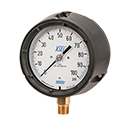

Pressure/Temperature Sensors
Harrington is your trusted supplier of high-quality pressure and temperature sensors. We offer a wide range of styles and manufacturers. Select your product to request a quote, get additional information, and explore purchasing options.
 Model 233.53 Pressure Gauge Bourdon Tube, Glycerin-Filled, Stainless Steel Wetted Parts, 304 Stainless Steel Case, 2-1/2" Dial, 1/4" NPT Connection, Center Back Mount, 30 psi, ± 2-1/2% of Span Accuracyper EA · Sign in for price
Model 233.53 Pressure Gauge Bourdon Tube, Glycerin-Filled, Stainless Steel Wetted Parts, 304 Stainless Steel Case, 2-1/2" Dial, 1/4" NPT Connection, Center Back Mount, 30 psi, ± 2-1/2% of Span Accuracyper EA · Sign in for price- Model 233.53 Pressure Gauge Bourdon Tube, Glycerin-Filled, Stainless Steel Wetted Parts, 304 Stainless Steel Case, 2-1/2" Dial, 1/4" NPT Connection, Center Back Mount, 15 psi, ± 2-1/2% of Span Accuracyper EA · Sign in for price
- Model 233.53 Pressure Gauge Bourdon Tube, Glycerin-Filled, Stainless Steel Wetted Parts, 304 Stainless Steel Case, 2-1/2" Dial, 1/4" NPT Connection, Center Back Mount, - 30 inHg/60 psi, ± 2-1/2% of Span Accuracyper EA · Sign in for price
- Model 233.53 Pressure Gauge Bourdon Tube, Glycerin-Filled, Stainless Steel Wetted Parts, 304 Stainless Steel Case, 2-1/2" Dial, 1/4" NPT Connection, Center Back Mount, - 30 inHg/30 psi, ± 2-1/2% of Span Accuracyper EA · Sign in for price
- Model 233.53 Pressure Gauge Bourdon Tube, Glycerin-Filled, Stainless Steel Wetted Parts, 304 Stainless Steel Case, 2-1/2" Dial, 1/4" NPT Connection, Center Back Mount, 30 inHg/30 Vacuum, ± 2-1/2% of Span Accuracyper EA · Sign in for price
- Model 233.53 Pressure Gauge Bourdon Tube, Glycerin-Filled, Stainless Steel Wetted Parts, 304 Stainless Steel Case, 4" Dial, 1/2" NPT Connection, Lower Mount, - 30 inHg/30 psi, ± 1% of Span Accuracyper EA · Sign in for price
- Model 233.53 Pressure Gauge Bourdon Tube, Glycerin-Filled, Stainless Steel Wetted Parts, 304 Stainless Steel Case, 4" Dial, 1/2" NPT Connection, Lower Mount, 15 psi, ± 1% of Span Accuracyper EA · Sign in for price
- Model 233.53 Pressure Gauge Bourdon Tube, Glycerin-Filled, Stainless Steel Wetted Parts, 304 Stainless Steel Case, 4" Dial, 1/2" NPT Connection, Lower Mount, 60 psi, ± 1% of Span Accuracyper EA · Sign in for price
- Model 233.53 Pressure Gauge Bourdon Tube, Glycerin-Filled, Stainless Steel Wetted Parts, 304 Stainless Steel Case, 4" Dial, 1/2" NPT Connection, Lower Mount, 100 psi, ± 1% of Span Accuracyper EA · Sign in for price
- Model 233.53 Pressure Gauge Bourdon Tube, Glycerin-Filled, Stainless Steel Wetted Parts, 304 Stainless Steel Case, 4" Dial, 1/2" NPT Connection, Lower Mount, 160 psi, ± 1% of Span Accuracyper EA · Sign in for price
- Model 233.53 Pressure Gauge Bourdon Tube, Glycerin-Filled, Stainless Steel Wetted Parts, 304 Stainless Steel Case, 2-1/2" Dial, 1/4" NPT Connection, Lower Mount, 5000 psi, ± 2-1/2% of Span Accuracyper EA · Sign in for price
- Model 233.53 Pressure Gauge Bourdon Tube, Glycerin-Filled, Stainless Steel Wetted Parts, 304 Stainless Steel Case, 2-1/2" Dial, 1/4" NPT Connection, Lower Mount, 3000 psi, ± 2-1/2% of Span Accuracyper EA · Sign in for price
- Model 233.53 Pressure Gauge Bourdon Tube, Glycerin-Filled, Stainless Steel Wetted Parts, 304 Stainless Steel Case, 2-1/2" Dial, 1/4" NPT Connection, Lower Mount, 2000 psi, ± 2-1/2% of Span Accuracyper EA · Sign in for price
- Model 233.53 Pressure Gauge Bourdon Tube, Glycerin-Filled, Stainless Steel Wetted Parts, 304 Stainless Steel Case, 2-1/2" Dial, 1/4" NPT Connection, Lower Mount, 1000 psi, ± 2-1/2% of Span Accuracyper EA · Sign in for price
- Model 233.53 Pressure Gauge Bourdon Tube, Glycerin-Filled, Stainless Steel Wetted Parts, 304 Stainless Steel Case, 2-1/2" Dial, 1/4" NPT Connection, Lower Mount, 600 psi, ± 2-1/2% of Span Accuracyper EA · Sign in for price
- Model 233.53 Pressure Gauge Bourdon Tube, Glycerin-Filled, Stainless Steel Wetted Parts, 304 Stainless Steel Case, 2-1/2" Dial, 1/4" NPT Connection, Lower Mount, 400 psi, ± 2-1/2% of Span Accuracyper EA · Sign in for price
- Model 233.53 Pressure Gauge Bourdon Tube, Glycerin-Filled, Stainless Steel Wetted Parts, 304 Stainless Steel Case, 2-1/2" Dial, 1/4" NPT Connection, Lower Mount, 300 psi, ± 2-1/2% of Span Accuracyper EA · Sign in for price
- Model 233.53 Pressure Gauge Bourdon Tube, Glycerin-Filled, Stainless Steel Wetted Parts, 304 Stainless Steel Case, 2-1/2" Dial, 1/4" NPT Connection, Lower Mount, 200 psi, ± 2-1/2% of Span Accuracyper EA · Sign in for price
- Model 233.53 Pressure Gauge Bourdon Tube, Glycerin-Filled, Stainless Steel Wetted Parts, 304 Stainless Steel Case, 2-1/2" Dial, 1/4" NPT Connection, Lower Mount, 160 psi, ± 2-1/2% of Span Accuracyper EA · Sign in for price
- Model 233.53 Pressure Gauge Bourdon Tube, Glycerin-Filled, Stainless Steel Wetted Parts, 304 Stainless Steel Case, 2-1/2" Dial, 1/4" NPT Connection, Lower Mount, 100 psi, ± 2-1/2% of Span Accuracyper EA · Sign in for price
- Model 233.53 Pressure Gauge Bourdon Tube, Glycerin-Filled, Stainless Steel Wetted Parts, 304 Stainless Steel Case, 2-1/2" Dial, 1/4" NPT Connection, Lower Mount, 60 psi, ± 2-1/2% of Span Accuracyper EA · Sign in for price
- Model 233.53 Pressure Gauge Bourdon Tube, Glycerin-Filled, Stainless Steel Wetted Parts, 304 Stainless Steel Case, 2-1/2" Dial, 1/4" NPT Connection, Lower Mount, 30 psi, ± 2-1/2% of Span Accuracyper EA · Sign in for price
- Model 233.53 Pressure Gauge Bourdon Tube, Glycerin-Filled, Stainless Steel Wetted Parts, 304 Stainless Steel Case, 2-1/2" Dial, 1/4" NPT Connection, Lower Mount, 15 psi, ± 2-1/2% of Span Accuracyper EA · Sign in for price
- Model 233.53 Pressure Gauge Bourdon Tube, Glycerin-Filled, Stainless Steel Wetted Parts, 304 Stainless Steel Case, 2-1/2" Dial, 1/4" NPT Connection, Lower Mount, - 30 inHg/160 psi, ± 2-1/2% of Span Accuracyper EA · Sign in for price
- Model 233.53 Pressure Gauge Bourdon Tube, Glycerin-Filled, Stainless Steel Wetted Parts, 304 Stainless Steel Case, 2-1/2" Dial, 1/4" NPT Connection, Lower Mount, - 30 inHg/60 psi, ± 2-1/2% of Span Accuracyper EA · Sign in for price
- Model 233.53 Pressure Gauge Bourdon Tube, Glycerin-Filled, Stainless Steel Wetted Parts, 304 Stainless Steel Case, 2-1/2" Dial, 1/4" NPT Connection, Lower Mount, - 30 inHg/30 psi, ± 2-1/2% of Span Accuracyper EA · Sign in for price
- Model 233.53 Pressure Gauge Bourdon Tube, Glycerin-Filled, Stainless Steel Wetted Parts, 304 Stainless Steel Case, 2-1/2" Dial, 1/4" NPT Connection, Lower Mount, 30 inHg Vacuum, ± 2-1/2% of Span Accuracyper EA · Sign in for price
- Model 233.53 Pressure Gauge Bourdon Tube, Glycerin-Filled, Stainless Steel Wetted Parts, 304 Stainless Steel Case, 4" Dial, 1/2" NPT Connection, Lower Mount, 1500 psi ± 1% of Span Accuracyper EA · Sign in for price
 Model 233.34 XSEL® Process Gauge Bourdon Tube, Glycerin Filled, 316L Stainless Steel Wetted Parts, 4-1/2" Dial, 1/4" NPT Connection, Lower Mount, 0 - 100 psi, ± 0.5% of Span Accuracyper EA · Sign in for price
Model 233.34 XSEL® Process Gauge Bourdon Tube, Glycerin Filled, 316L Stainless Steel Wetted Parts, 4-1/2" Dial, 1/4" NPT Connection, Lower Mount, 0 - 100 psi, ± 0.5% of Span Accuracyper EA · Sign in for price- Model 233.34 XSEL® Process Gauge Bourdon Tube, Glycerin Filled, 316L Stainless Steel Wetted Parts, 4-1/2" Dial, 1/4" NPT Connection, Lower Mount, 0 - 160 psi, ± 0.5% of Span Accuracyper EA · Sign in for price
- Model 233.34 XSEL® Process Gauge Bourdon Tube, Glycerin Filled, 316L Stainless Steel Wetted Parts, 4-1/2" Dial, 1/2" NPT Connection, Lower Mount, 0 - 15 psi, ± 0.5% of Span Accuracyper EA · Sign in for price
- Model 233.34 XSEL® Process Gauge Bourdon Tube, Glycerin Filled, 316L Stainless Steel Wetted Parts, 4-1/2" Dial, 1/2" NPT Connection, Lower Mount, 0 - 60 psi, ± 0.5% of Span Accuracyper EA · Sign in for price
- Model 232.34 XSEL® Process Gauge Bourdon Tube, Glycerin Filled, 316L Stainless Steel Wetted Parts, 4-1/2" Dial, 1/2" NPT Connection, Lower Mount, 0 - 100 psi, ± 0.5% of Span Accuracyper EA · Sign in for price

Model 212.34 XSEL™ Process Gauge Bourdon Tube, Dry, Copper Alloy Wetted Parts, 4-1/2" Dial, 1/4" NPT Connection, Lower Mount, - 30 inHg/100 psi, ± 0.5% of Span Accuracyper EA · Sign in for price- Model 212.34 XSEL™ Process Gauge Bourdon Tube, Dry, Copper Alloy Wetted Parts, 4-1/2" Dial, 1/4" NPT Connection, Lower Mount, 0 - 160 psi, ± 0.5% of Span Accuracyper EA · Sign in for price
- Model 212.34 XSEL™ Process Gauge Bourdon Tube, Dry, Copper Alloy Wetted Parts, 4-1/2" Dial, 1/2" NPT Connection, Lower Mount, 0 - 30 psi, ± 0.5% of Span Accuracyper EA · Sign in for price
- Model 232.34 XSEL® Process Gauge Bourdon Tube, Dry, 316L Stainless Steel Wetted Parts, 4-1/2" Dial, 1/4" NPT Connection, Lower Mount, - 30 inHg/100psi, ± 0.5% of Span Accuracyper EA · Sign in for price
- Model 232.34 XSEL® Process Gauge Bourdon Tube, Dry, 316L Stainless Steel Wetted Parts, 4-1/2" Dial, 1/4" NPT Connection, Lower Mount, 0 - 30 psi, ± 0.5% of Span Accuracyper EA · Sign in for price
- Model 232.34 XSEL® Process Gauge Bourdon Tube, Dry, 316L Stainless Steel Wetted Parts, 4-1/2" Dial, 1/4" NPT Connection, Lower Mount, 0 - 60 psi, ± 0.5% of Span Accuracyper EA · Sign in for price
- Model 232.34 XSEL® Process Gauge Bourdon Tube, Dry, 316L Stainless Steel Wetted Parts, 4-1/2" Dial, 1/4" NPT Connection, Lower Mount, 0 - 160 psi, ± 0.5% of Span Accuracyper EA · Sign in for price